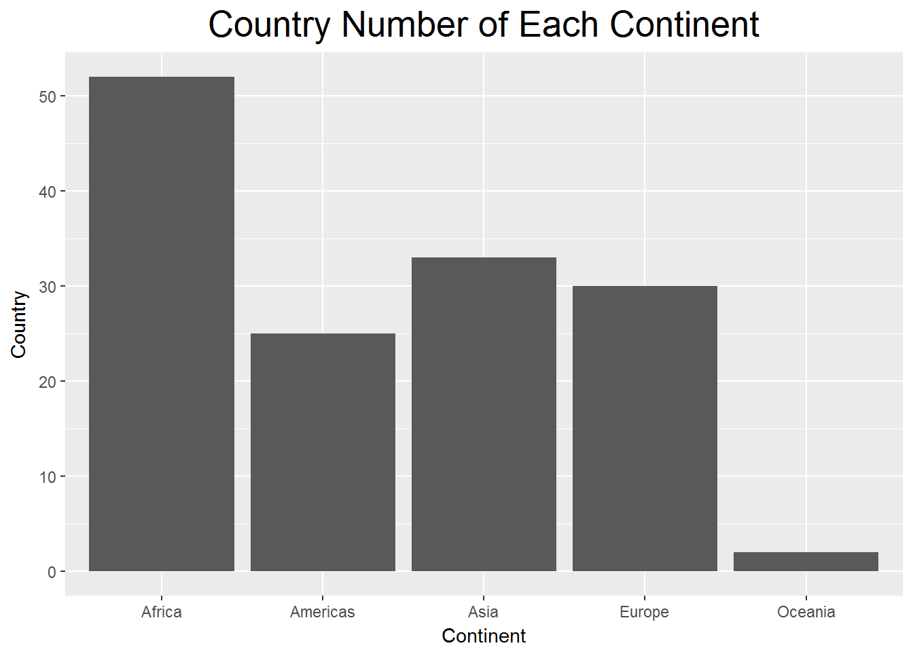
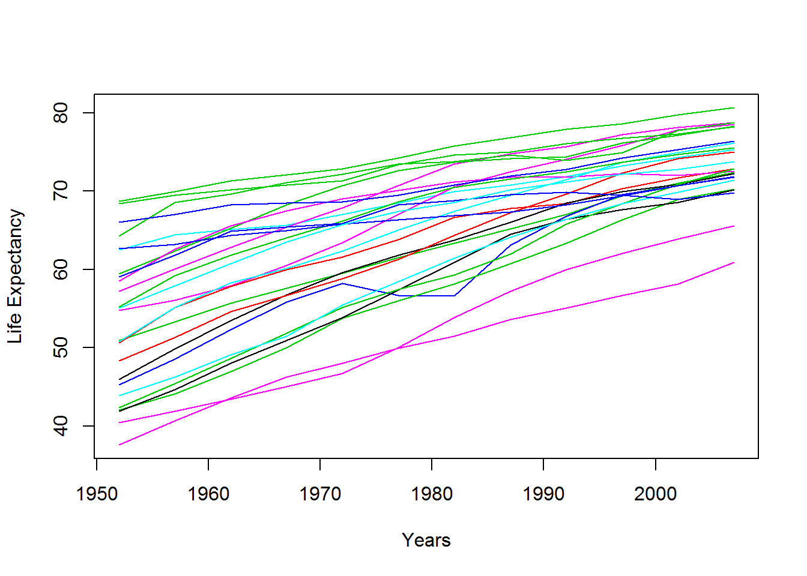
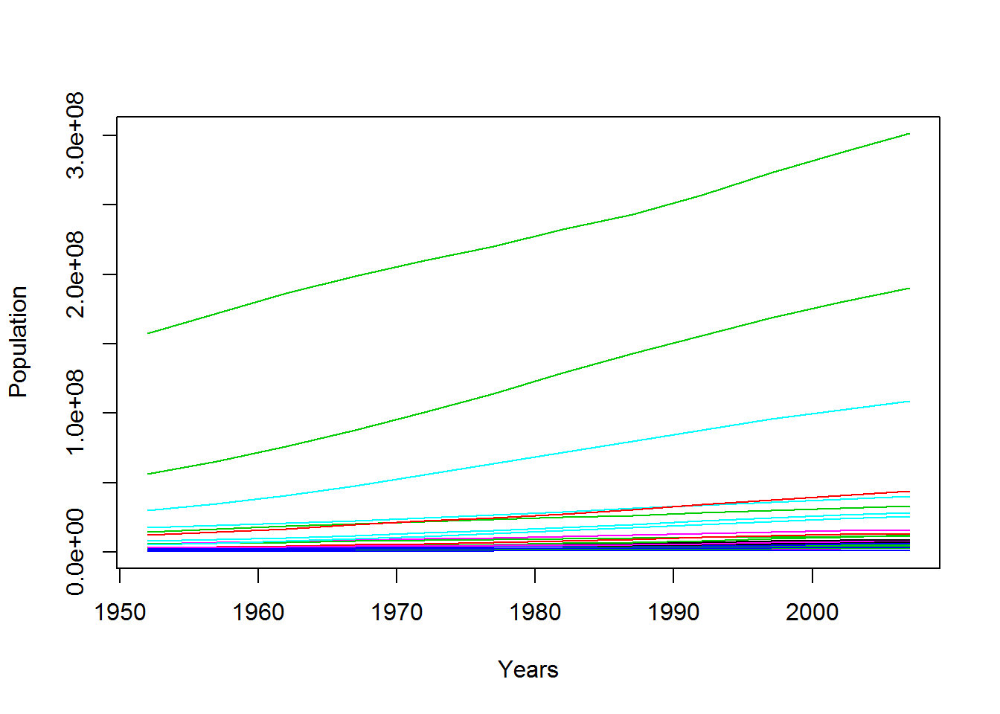
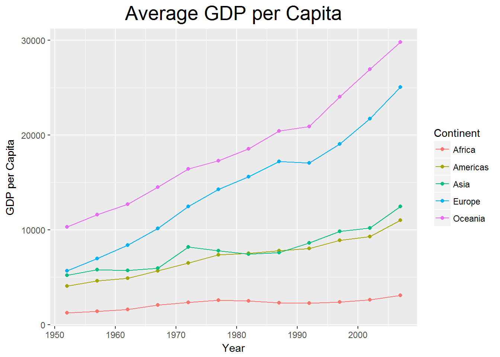
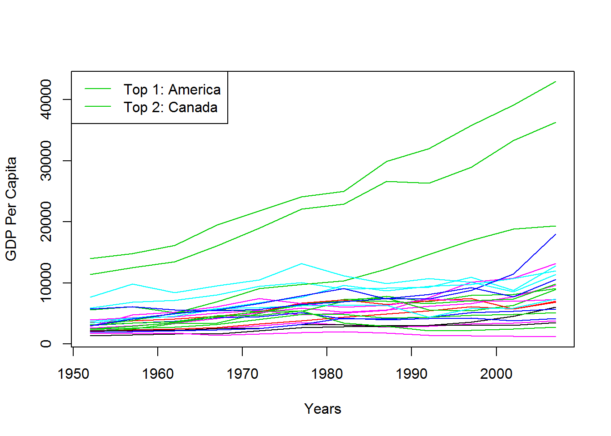

Interactive Web App
(I) Background
- Instructor: Peng Wang, AVP, Head of Data Science - Operation & Fraud Detection at MassMutual Financial Group
- The data set used in this project is gapminder from bioconnector.org. The data set includes the data of Life Expectancy, Population, GDP per Capita of all the countries of each continent from 1952 to 2007 with an interval of 5 years.
- Download Data
- Multiple visulizations of the data set (Section II) and an interactive web application (Section III) were made in this project report.
(II) Visulizations
library(dplyr)
library(readr)
library(stats)
library(knitr)
library(ggplot2)
library(tidyr)
gapminder=read.csv("http://bioconnector.org/data/gapminder.csv")
colnames(gapminder)=c("Country","Continent","Year","Life.Expectancy","Population","GDP.per.Capita")1. How many unique countries are represented per continent?
table.1=gapminder %>%
group_by(Continent) %>%
summarise(Country=n_distinct(Country))
kable(table.1,col.names=c("Continent","Country"),align="c")| Continent | Country |
|---|---|
| Africa | 52 |
| Americas | 25 |
| Asia | 33 |
| Europe | 30 |
| Oceania | 2 |
ggplot(data=table.1)+
geom_col(mapping=aes(Continent,Country))+
ggtitle("Country Number of Each Continent")+
xlab("Continent")+
ylab("Country")+
theme(plot.title=element_text(size=20,hjust=0.5))
2. According to the data available, what was the average Life Expectancy across each continent from 1952 to 2007?
le=tapply(gapminder$Life.Expectancy,list(gapminder$Continent,gapminder$Year),mean)
le=data.frame(t(le))
Year=seq(from=1952,to=2007,by=5)
le=cbind(Year,le)
row.names(le)=1:12
le=gather(data=le,Continent,Average.Life.Expectancy,-Year)
p=ggplot(data=le,aes(x=Year,y=Average.Life.Expectancy,color=Continent))+
geom_point()+
geom_line()+
ggtitle("Average Life Expectancy")+
xlab("Year")+
ylab("Life Expectancy (Years)")+
theme(plot.title=element_text(size=20,hjust=0.5))
p
2.1 Life Expectancy for Every Countries in Americas
le.Americas=gapminder%>%filter(Continent=="Americas")
le.Americas=tapply(le.Americas$Life.Expectancy,list(le.Americas$Country,le.Americas$Year),mean)
le.Americas=t(data.frame(le.Americas))
row.names(le.Americas)=seq(1952,2007,5)
matplot(seq(1952,2007,5),le.Americas,type="l",lty=1,xlab="Years",ylab="Life Expectancy")
2.2 Countries that have the longest average Life Expectancy in the world
lle=sort(tapply(gapminder$Life.Expectancy,gapminder$Country,mean),decreasing=TRUE)[1:5]
lle=as.data.frame(lle)
colnames(lle)="Average Life Expectancy"
kable(lle,align="c")| Average Life Expectancy | |
|---|---|
| Iceland | 76.51142 |
| Sweden | 76.17700 |
| Norway | 75.84300 |
| Netherlands | 75.64850 |
| Switzerland | 75.56508 |
2.3 Countries that have the shortest average Life Expectancy in the world
sle=sort(tapply(gapminder$Life.Expectancy,gapminder$Country,mean),decreasing=FALSE)[1:5]
sle=as.data.frame(sle)
colnames(sle)="Average Life Expectancy"
kable(sle,align="c")| Average Life Expectancy | |
|---|---|
| Sierra Leone | 36.76917 |
| Afghanistan | 37.47883 |
| Angola | 37.88350 |
| Guinea-Bissau | 39.21025 |
| Mozambique | 40.37950 |
3. According to the data available, what was the average Population across each continent from 1952 to 2007?
pop=tapply(gapminder$Population,list(gapminder$Continent,gapminder$Year),mean)
pop.data=t(data.frame(pop))
row.names(pop.data)=seq(1952,2007,5)
matplot(seq(1952,2007,5),pop.data,type="l",col=1:5,lty=1,xlab="Years",ylab="Population")
legend("topleft",legend=c("Africa","Americas","Asia","Europe","Ocenia"),col=1:5,lty=1,cex=1)
3.1 Population for Every Countries in Americas
pop.Americas=gapminder%>%filter(Continent=="Americas")
pop.Americas=tapply(pop.Americas$Population,list(pop.Americas$Country,pop.Americas$Year),mean)
pop.Americas=t(data.frame(pop.Americas))
row.names(pop.Americas)=seq(1952,2007,5)
matplot(seq(1952,2007,5),pop.Americas,type="l",lty=1,xlab="Years",ylab="Population")
4. According to the data available, what was the average GDP per Capita across each continent from 1952 to 2007?
gdp=tapply(gapminder$GDP.per.Capita,list(gapminder$Continent,gapminder$Year),mean)
gdp.data=t(data.frame(gdp))
row.names(gdp.data)=seq(1952,2007,5)
matplot(seq(1952,2007,5),gdp.data,type="l",col=1:5,lty=1,xlab="Years",ylab="GDP Per Capita")
legend("topleft",legend=c("Africa","Americas","Asia","Europe","Ocenia"),col=1:5,lty=1,cex=1)
4.1 GDP Per Capita for Every Countries in Americas
gdp.Americas=gapminder%>%filter(Continent=="Americas")
gdp.Americas=tapply(gdp.Americas$GDP.per.Capita,list(gdp.Americas$Country,gdp.Americas$Year),mean)
gdp.Americas=t(data.frame(gdp.Americas))
row.names(gdp.Americas)=seq(1952,2007,5)
matplot(seq(1952,2007,5),gdp.Americas,type="l",lty=1,xlab="Years",ylab="GDP Per Capita")
legend("topleft",legend=c("Top 1: America","Top 2: Canada"),lty=1,col=3)